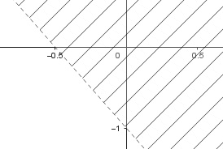
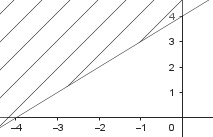

Aufgabe 64 Wie lautet die lineare Ungleichung a) ausschließlich der Randgerade? b) einschließlich der Randgerade? a)

Randgerade: Allgemeine Form y = mx + b 2 Punktkoordinaten abgelesen: (x1|y1) = (0|-1) (x2|y2) = (-0,5|0) y2 - y1 0 - (-1) m = --------- = ---------- = -2 x2 - x1 -0,5 - 0 (0|-1) eingesetzt in y = mx + b -1 = 0 * (-2) + b b = -1 y = -2x - 1 Die Halbebene liegt oberhalb der Gerade, somit gilt: y > -2x - 1 b)
Randgerade: Allgemeine Form y = mx + b 2 Punktkoordinaten abgelesen: (x1|y1) = (-4|0) (x2|y2) = (0|4) y2 - y1 0 - (-4) m = --------- = ---------- = 1 x2 - x1 0 - (-4) (0|4) eingesetzt in y = mx + b 4 = 0 * 4 + b b = 4 y = x + 4 Die Halbebene liegt oberhalb der eingeschlossenen Gerade, somit gilt: y ≥ x + 4